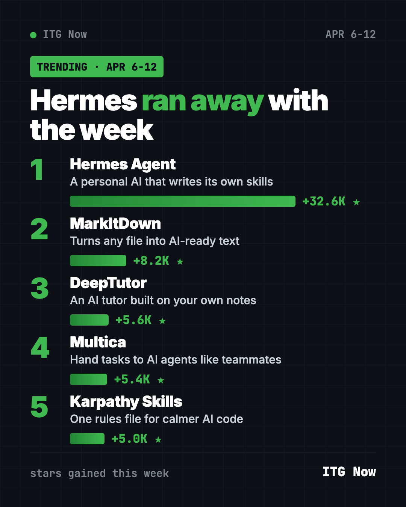

Home › Top repos › GitHub trending this week
Trending GitHub Repositories April 6 2026: Hermes Wins
- Top repos
- Published 2026-10-15
- 6 min read
- Updated 2026-10-16
- By the It's Trending Global team
Trending GitHub repositories April 6 2026: Hermes Agent, Microsoft's MarkItDown, DeepTutor, Multica and the Karpathy rules file, explained simply.
The trending GitHub repositories April 6 2026 list had one clear winner. Hermes Agent, a personal AI assistant from Nous Research, gained about 32,600 stars. That is roughly four times the runner-up, Microsoft's MarkItDown.
DeepTutor, Multica and a small rules file inspired by AI researcher Andrej Karpathy rounded out the top five. Here is what each one does and the fastest way to try it.
Key takeaways
- Hermes Agent is an assistant that writes its own new skills and lives in your chat apps.
- MarkItDown turns PDFs, Word files, slides and spreadsheets into clean text an AI can read.
- DeepTutor is a free AI tutor that teaches from your own notes and books.
- Multica lets you hand tasks to AI agents the way you would assign them to a coworker.
- Karpathy Skills is one text file with four rules that make Claude Code less sloppy.

Quick comparison
| Repo | What it does | Best for | Stars this week | License |
|---|---|---|---|---|
| Hermes Agent | Self-improving personal AI | Anyone, in chat apps | +32.6K | MIT |
| MarkItDown | Files to AI-ready text | Students, office workers | +8.2K | MIT |
| DeepTutor | Personal AI tutor | Learners and teachers | +5.6K | Apache-2.0 |
| Multica | Task board for AI agents | Small teams | +5.4K | Apache-2.0 with extra terms |
| Karpathy Skills | Four-rule file for Claude Code | Claude Code users | +5.0K | No license file listed |
Star gains cover April 6 to 12, 2026. Totals were checked on GitHub on October 16, 2026.
1. Hermes Agent: the assistant that grows with you
Stars: +32.6K this week · about 254K total now
What it is: Hermes Agent is a free AI assistant from Nous Research. After a hard task, it can write itself a new skill so it does better next time. It searches its own past chats, runs scheduled jobs, and talks to you on Telegram, Discord, Slack, WhatsApp or Signal.
Who it's for: People who want one assistant across all their apps, with any AI model they like.
Everyday use: Ask it for a weather and calendar summary every morning at 7 in WhatsApp.
Install it: On Mac or Linux:
curl -fsSL https://hermes-agent.nousresearch.com/install.sh | bash
Then type hermes to start chatting.
Or ask your AI helper:
Install Hermes Agent from github.com/NousResearch/hermes-agent and set up a daily 7am summary for me.
See Hermes Agent on GitHub · Read our full guide
2. MarkItDown: any file into AI-ready text
Stars: +8.2K this week · about 190K total now
What it is: A small free tool from Microsoft. It converts PDFs, Word, PowerPoint, Excel and more into Markdown, a plain-text format AI chatbots read well. Headings, lists and tables survive the trip.
Who it's for: Students and office workers who feed documents to ChatGPT or Claude.
Everyday use: Turn a 40-page PDF report into text, then ask an AI for a one-page summary.
Install it: You need Python 3.10 or newer.
pip install 'markitdown[all]'
markitdown report.pdf -o report.md
Or ask your AI helper:
Install MarkItDown from github.com/microsoft/markitdown and convert every PDF in this folder to Markdown.
3. DeepTutor: an AI tutor built on your notes
Stars: +5.6K this week · about 41K total now
What it is: DeepTutor comes from the Data Intelligence Lab at the University of Hong Kong. You give it your notes, textbooks or PDFs, and it explains, quizzes and adapts to how you learn. It runs in your browser on your own computer.
Who it's for: Students, self-learners and teachers.
Everyday use: Upload your biology chapter and ask for ten practice questions.
Install it:
pip install -U deeptutor
deeptutor init
deeptutor start
Or ask your AI helper:
Install DeepTutor from github.com/HKUDS/DeepTutor and help me load my class notes as a knowledge base.
See DeepTutor on GitHub · Read our full guide
4. Multica: give AI agents a to-do list
Stars: +5.4K this week · about 53K total now
What it is: A shared workspace where AI coding agents are treated like teammates. You assign an issue, the agent picks it up, posts progress, raises blockers and hands work back for review. It works with Claude Code, Codex and other agents you already use, and you can host it yourself.
Who it's for: Small teams juggling several AI helpers at once.
Everyday use: Assign "fix the broken signup button" to an agent and check its progress later, like any task.
Install it:
curl -fsSL https://raw.githubusercontent.com/multica-ai/multica/main/scripts/install.sh | bash -s -- --with-server
multica setup self-host
Or ask your AI helper:
Set up a self-hosted Multica from github.com/multica-ai/multica and connect my Claude Code to it.
5. Karpathy Skills: four rules in one file
Stars: +5.0K this week · about 220K total now
What it is: A single CLAUDE.md file, a note Claude Code reads before every task. It is built on Andrej Karpathy's complaints about AI coders: wrong guesses, bloated code and edits nobody asked for. The four rules are Think Before Coding, Simplicity First, Surgical Changes and Goal-Driven Execution. The repo has since moved to multica-ai.
Who it's for: Anyone whose AI helper overcomplicates simple jobs.
Everyday use: Drop the file into a project and watch Claude ask before guessing.
Install it: In Claude Code:
/plugin marketplace add forrestchang/andrej-karpathy-skills
/plugin install andrej-karpathy-skills@karpathy-skills
Or ask your AI helper:
Add the CLAUDE.md from github.com/multica-ai/andrej-karpathy-skills to this project and summarize its rules.
See Karpathy Skills on GitHub · Read our full guide
Which one should you try first?
- Want a helper in your phone's chat apps? Hermes Agent.
- Drowning in PDFs? MarkItDown takes two minutes.
- Studying for something? DeepTutor.
- Running several AI agents? Multica.
- Just want Claude Code to calm down? Karpathy Skills, the fastest win here.
💡 Tip: Karpathy Skills is plain text. Open it and read it first. You can edit any rule you disagree with.
For the full month, see the best GitHub repos of April 2026 and what happened in AI in April 2026. The week before is March 30 to April 5; next is April 13 to 19.
FAQ
What were the trending GitHub repositories the week of April 6, 2026?
Hermes Agent, MarkItDown, DeepTutor, Multica and Karpathy Skills. Hermes Agent gained about 32,600 stars.
Is Hermes Agent free?
The app is free and open source. The AI model you connect may charge per use.
Does MarkItDown send my files anywhere?
No. It runs on your own computer and writes the text file next to the original.
Is Karpathy Skills made by Andrej Karpathy?
No. It was written by another developer, based on Karpathy's public posts about AI coding mistakes.
Do I need to code to use these?
No for MarkItDown and Karpathy Skills; you paste a line. The others take a few more steps, which Claude or Codex can do for you.
Want a new free tool explained every day? Follow ITG Now on Instagram.
Keep reading

Trending GitHub Repos October 2026: The Top 5 So Far
The trending GitHub repos of October 2026 so far: a free Photoshop-style editor, an AI art studio, a big AI model for gaming PCs and more, explained.

Trending GitHub Repos This Week, Oct 5 2026: The Top 5
Trending GitHub repos this week Oct 5 2026: Matt Pocock's skills, the openGym workout tracker, e2e testing, HyperFrames video and claude-mem memory.

GitHub Trending September 28, 2026: Hindsight and Paperclip
GitHub trending September 28 2026: Hindsight, Paperclip, NVIDIA's OpenShell and a free 542-lesson AI course, with setup steps for each.